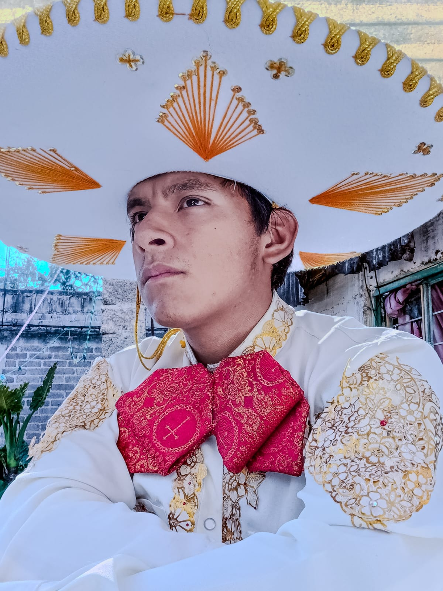
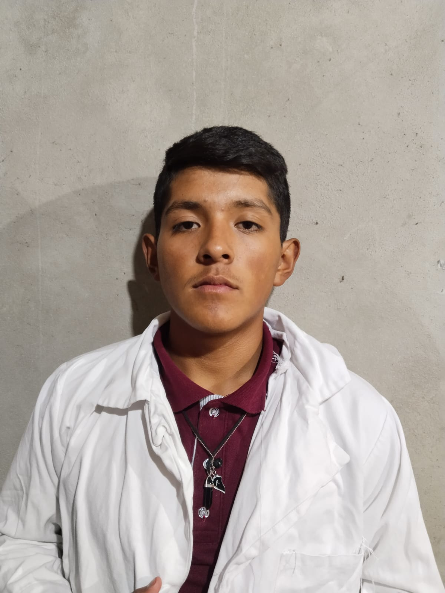
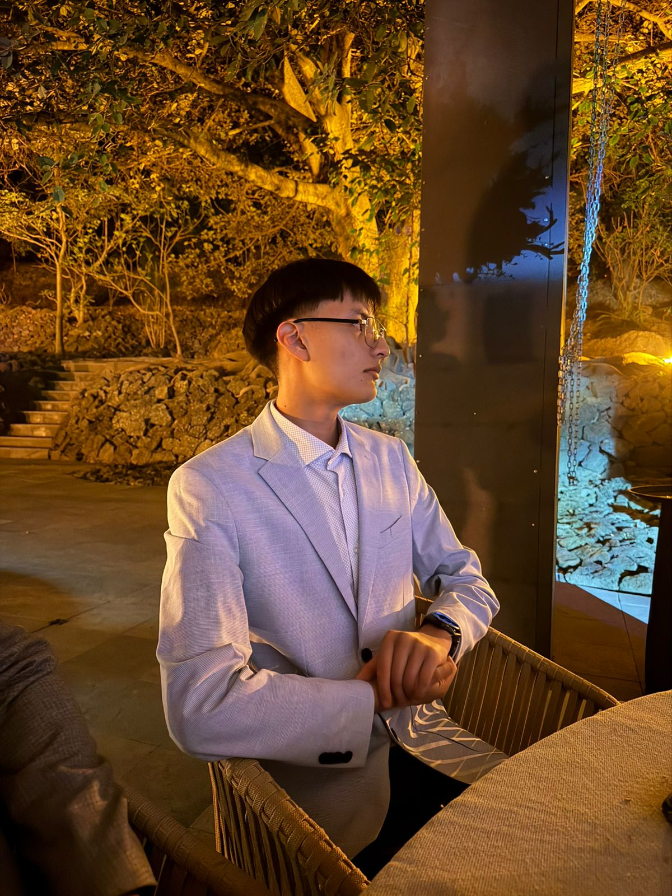
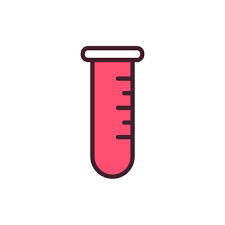
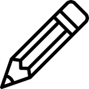
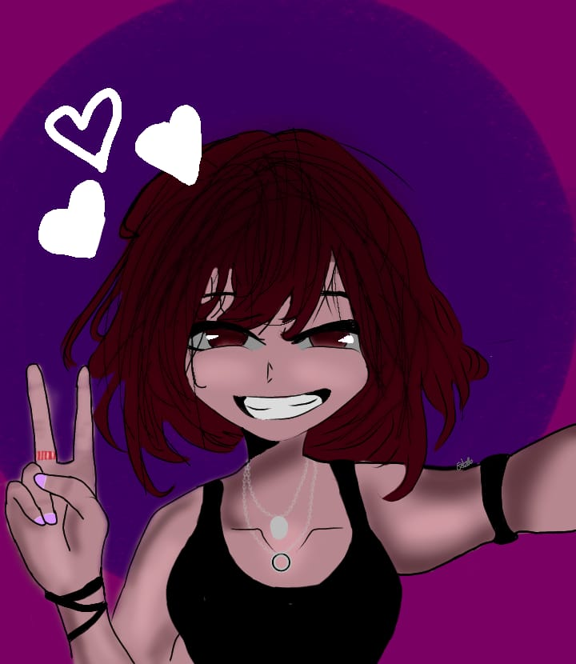
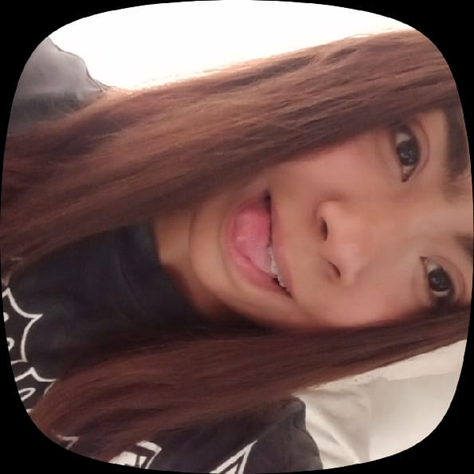

El líder del equipo se encarga de organizar y supervisar la elaboración de los trabajos, apoyar a sus compañeros en caso de dudas o dificultades, y representar al equipo en las actividades académicas, asegurando una buena comunicación y desempeño grupal.

El sublíder del equipo apoya en la organización y coordinación del grupo, contribuye con ideas creativas y colabora en la realización de las actividades necesarias para el desarrollo del proyecto.

Se encarga de sacar adelante las tareas que nadie toma o que necesitan apoyo, siguiendo indicaciones y asegurando que todo se complete de forma correcta.

Encargado de reunir y preparar los materiales necesarios, así como organizar la información requerida para el correcto desarrollo de los trabajos.
Miembro clave del equipo que destaca por resolver problemas de manera rápida, apoyar en la organización de los trabajos y asumir responsabilidades en ausencia del líder.
Se encarga de dar seguimiento a las actividades del equipo, recordar los trabajos pendientes y mantener una organización equilibrada, brindando apoyo constante a sus compañeros.

Responsable del diseño y desarrollo de la página web del proyecto, integrando contenido visual interactivo mediante animaciones 3D para mejorar la experiencia del usuario y facilitar la comprensión del tema.
Nayeli se desempeña como sublíder del equipo de animación digital y animadora principal, participando en la organización del equipo y liderando la creación de las animaciones del proyecto.

Odette se desempeña como ilustradora general, encargándose de la creación de elementos visuales que apoyan y enriquecen el desarrollo del proyecto.
Diego es responsable de la gestión de redes sociales y la difusión del proyecto, encargándose de comunicar y promocionar el trabajo del equipo.

Areli se desempeña como ilustradora, participando en la creación de elementos visuales que complementan y enriquecen el proyecto.